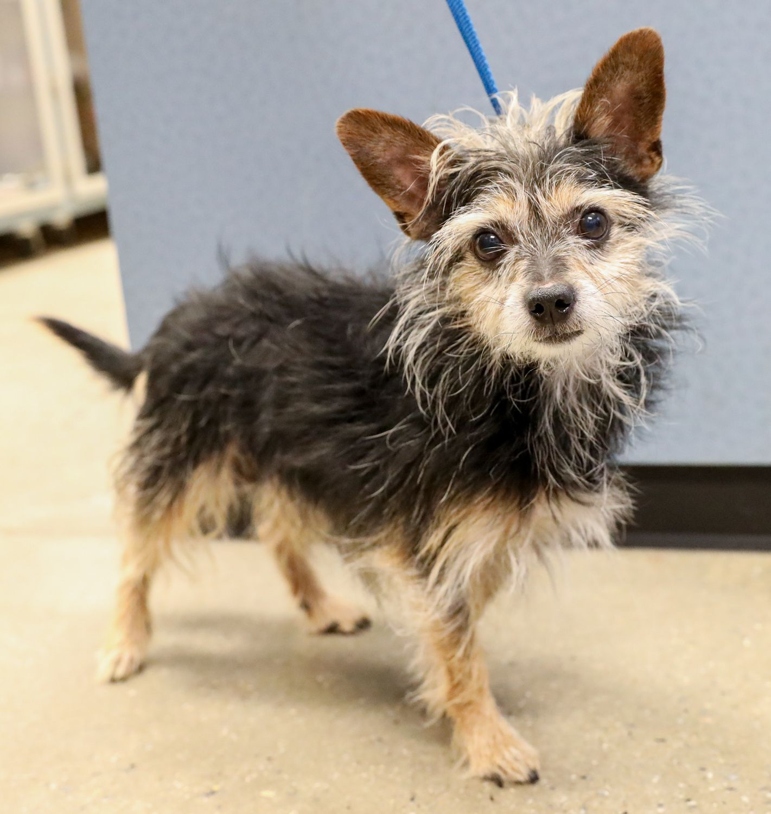

Hi! My name is Fedo!

Breed: Aussiewawa
Age/Gender: 2 years old/Male
Favorite Treat: Peanut Butter Bones
Favorite Activity: Playing Fetch
Description:
I'm a dog that enjoys walks and playing fetch, and cuddling and relaxing around my home.
Make your Decision: